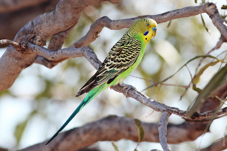
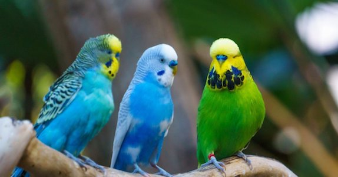

Wow! Based on your answers... You share similarities with the Budgerigar (Melopsittacus undulatus)

The Budgerigar is a very beautiful and social bird. When kept in pairs or colonies, they can be easily tamed and become very loyal and lovign little friend to a patient owner but, they enjoy less physical touch and more social interaction. Surprisingly, these birds are known to be able to actually "talk" better than some of the larger parrot species, some hve even been known to develop vocabularies of hundreds of words. Like the Budgerigar, you are a laid-back, social, and loyal to those you let in and you prefer less physical touch from those you are not very close to.
Click on Ceasar to Restart!